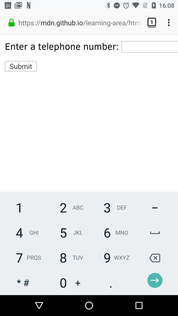
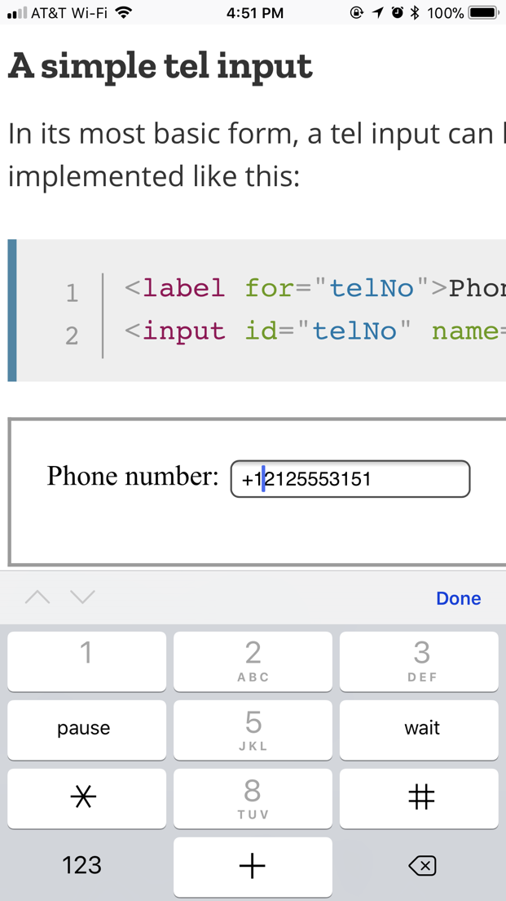
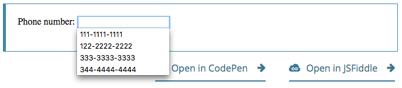

{{HTMLElement("input")}} elements of type tel are used to let the user enter and edit a telephone number. Unlike <input type="email"> and <input type="url"> , the input value is not automatically validated to a particular format before the form can be submitted, because formats for telephone numbers vary so much around the world.
Despite the fact that inputs of type tel are functionally identical to standard text inputs, they do serve useful purposes; the most quickly apparent of these is that mobile browsers — especially on mobile phones — may opt to present a custom keypad optimized for entering phone numbers. Using a specific input type for telephone numbers also makes adding custom validation and handling of phone numbers more convenient.
Note: Browsers that don't support type tel fall back to being a standard {{HTMLElement("input/text", "text")}} input.
| {{anch("Value")}} | A {{domxref("DOMString")}} representing a telephone number, or empty |
| Events | {{domxref("HTMLElement/change_event", "change")}} and {{domxref("HTMLElement/input_event", "input")}} |
| Supported common attributes | {{htmlattrxref("autocomplete", "input")}}, {{htmlattrxref("list", "input")}}, {{htmlattrxref("maxlength", "input")}}, {{htmlattrxref("minlength", "input")}}, {{htmlattrxref("pattern", "input")}}, {{htmlattrxref("placeholder", "input")}}, {{htmlattrxref("readonly", "input")}}, and {{htmlattrxref("size", "input")}} |
| IDL attributes | list, selectionStart, selectionEnd, selectionDirection, and value |
| Methods | {{domxref("HTMLInputElement.select", "select()")}}, {{domxref("HTMLInputElement.setRangeText", "setRangeText()")}}, {{domxref("HTMLInputElement.setSelectionRange", "setSelectionRange()")}} |
The {{HTMLElement("input")}} element's {{htmlattrxref("value", "input")}} attribute contains a {{domxref("DOMString")}} that either represents a telephone number or is an empty string ("").
In addition to the attributes that operate on all {{HTMLElement("input")}} elements regardless of their type, telephone number inputs support the following attributes:
| Attribute | Description |
|---|---|
{{anch("attr-list","list")}} |
The id of the <datalist> element that contains the optional pre-defined autocomplete options |
{{anch("attr-maxlength","maxlength")}} |
The maximum length, in UTF-16 characters, to accept as a valid input |
{{anch("attr-minlength","minlength")}} |
The minimum length that is considered valid for the field's contents |
{{anch("attr-pattern","pattern")}} |
A regular expression the entered value must match to pass constraint validation |
{{anch("attr-placeholder","placeholder")}} |
An example value to display inside the field when it has no value |
{{anch("attr-readonly","readonly")}} |
A Boolean attribute which, if present, indicates that the field's contents should not be user-editable |
{{anch("attr-size","size")}} |
The number of characters wide the input field should be onscreen |
{{page("/en-US/docs/Web/HTML/Element/input/text", "attr-list", 0, 1, 2)}}
maxlength>The maximum number of characters (as UTF-16 code units) the user can enter into the telephone number field. This must be an integer value 0 or higher. If no maxlength is specified, or an invalid value is specified, the telephone number field has no maximum length. This value must also be greater than or equal to the value of minlength.
The input will fail constraint validation if the length of the text entered into the field is greater than maxlength UTF-16 code units long.
minlengthThe minimum number of characters (as UTF-16 code units) the user can enter into the telephone number field. This must be an non-negative integer value smaller than or equal to the value specified by maxlength. If no minlength is specified, or an invalid value is specified, the telephone number input has no minimum length.
The telephone number field will fail constraint validation if the length of the text entered into the field is fewer than minlength UTF-16 code units long.
pattern{{page("/en-US/docs/Web/HTML/Element/input/text", "pattern-include")}}
See {{anch("Pattern validation")}} below for details and an example.
{{page("/en-US/docs/Web/HTML/Element/input/text", "attr-placeholder", 0, 1, 2)}}
{{page("/en-US/docs/Web/HTML/Element/input/text", "attr-readonly", 0, 1, 2)}}
{{page("/en-US/docs/Web/HTML/Element/input/text", "attr-size", 0, 1, 2)}}
The following non-standard attributes are available to telephone number input fields. As a general rule, you should avoid using them unless it can't be helped.
| Attribute | Description |
|---|---|
{{anch("autocorrect")}} |
Whether or not to allow autocorrect while editing this input field. Safari only. |
{{anch("mozactionhint")}} |
A string indicating the type of action that will be taken when the user presses the Enter or Return key while editing the field; this is used to determine an appropriate label for that key on a virtual keyboard. Firefox for Android only. |
autocorrect {{non-standard_inline}}{{page("/en-US/docs/Web/HTML/Element/input/text", "autocorrect-include")}}
mozactionhint {{non-standard_inline}}{{page("/en-US/docs/Web/HTML/Element/input/text", "mozactionhint-include")}}
Telephone numbers are a very commonly collected type of data on the web. When creating any kind of registration or e-commerce site, for example, you will likely need to ask the user for a telephone number, whether for business purposes or for emergency contact purposes. Given how commonly-entered phone numbers are, it's unfortunate that a "one size fits all" solution for validating phone numbers is not practical.
Fortunately, you can consider the requirements of your own site and implement an appropriate level of validation yourself. See {{anch("Validation")}}, below, for details.
One of the main advantages of <input type="tel"> is that it causes mobile browsers to display a special keyboard for entering phone numbers. For example, here's what the keypads look like on a couple of devices.
| Firefox for Android | WebKit iOS (Safari/Chrome/Firefox) |
|---|---|
|  |  |
In its most basic form, a tel input can be implemented like this:
<label for="telNo">Phone number:</label> <input id="telNo" name="telNo" type="tel">
{{ EmbedLiveSample('A_simple_tel_input', 600, 40) }}
There is nothing magical going on here. When submitted to the server, the above input's data would be represented as, for example, telNo=+12125553151.
Sometimes it's helpful to offer an in-context hint as to what form the input data should take. This can be especially important if the page design doesn't offer descriptive labels for each {{HTMLElement("input")}}. This is where placeholders come in. A placeholder is a value that demonstrates the form the value should take by presenting an example of a valid value, which is displayed inside the edit box when the element's value is "". Once data is entered into the box, the placeholder disappears; if the box is emptied, the placeholder reappears.
Here, we have an tel input with the placeholder 123-4567-8901. Note how the placeholder disappears and reappears as you manipulate the contents of the edit field.
<input id="telNo" name="telNo" type="tel" placeholder="123-4567-8901">
{{ EmbedLiveSample('Placeholders', 600, 40) }}
You can control not only the physical length of the input box, but also the minimum and maximum lengths allowed for the input text itself.
The physical size of the input box can be controlled using the {{htmlattrxref("size", "input")}} attribute. With it, you can specify the number of characters the input box can display at a time. In this example, for instance, the tel edit box is 20 characters wide:
<input id="telNo" name="telNo" type="tel" size="20">
{{ EmbedLiveSample('Physical_input_element_size', 600, 40) }}
The size is separate from the length limitation on the entered telephone number. You can specify a minimum length, in characters, for the entered telephone number using the {{htmlattrxref("minlength", "input")}} attribute; similarly, use {{htmlattrxref("maxlength", "input")}} to set the maximum length of the entered telephone number.
The example below creates a 20-character wide telephone number entry box, requiring that the contents be no shorter than 9 characters and no longer than 14 characters.
<input id="telNo" name="telNo" type="tel" size="20" minlength="9" maxlength="14">
{{EmbedLiveSample("Element_value_length", 600, 40) }}
Note: The above attributes do affect {{anch("Validation")}} — the above example's inputs will count as invalid if the length of the value is less than 9 characters, or more than 14. Most browser won't even let you enter a value over the max length.
As always, you can provide a default value for an tel input box by setting its {{htmlattrxref("value", "input")}} attribute:
<input id="telNo" name="telNo" type="tel" value="333-4444-4444">
{{EmbedLiveSample("Default_value", 600, 40)}}
Taking it a step farther, you can provide a list of default phone number values from which the user can select. To do this, use the {{htmlattrxref("list", "input")}} attribute. This doesn't limit the user to those options, but does allow them to select commonly-used telephone numbers more quickly. This also offers hints to {{htmlattrxref("autocomplete", "input")}}. The list attribute specifies the ID of a {{HTMLElement("datalist")}} element, which in turn contains one {{HTMLElement("option")}} element per suggested value; each option's value is the corresponding suggested value for the telephone number entry box.
<label for="telNo">Phone number: </label> <input id="telNo" name="telNo" type="tel" list="defaultTels"> <datalist id="defaultTels"> <option value="111-1111-1111"> <option value="122-2222-2222"> <option value="333-3333-3333"> <option value="344-4444-4444"> </datalist>
{{EmbedLiveSample("Offering_suggested_values", 600, 40)}}
With the {{HTMLElement("datalist")}} element and its {{HTMLElement("option")}}s in place, the browser will offer the specified values as potential values for the email address; this is typically presented as a popup or drop-down menu containing the suggestions. While the specific user experience may vary from one browser to another, typically clicking in the edit box presents a drop-down of the suggested email addresses. Then, as the user types, the list is adjusted to show only filtered matching values. Each typed character narrows down the list until the user makes a selection or types a custom value.
Here's a screenshot of what that might look like:

As we've touched on before, it's quite difficult to provide a one-size-fits-all client-side validation solution for phone numbers. So what can we do? Let's consider some options.
Important: HTML form validation is not a substitute for server-side scripts that ensure the entered data is in the proper format before it is allowed into the database. It's far too easy for someone to make adjustments to the HTML that allow them to bypass the validation, or to remove it entirely. It's also possible for someone to bypass your HTML entirely and submit the data directly to your server. If your server-side code fails to validate the data it receives, disaster could strike when improperly-formatted data (or data which is too large, is of the wrong type, and so forth) is entered into your database.
You can make it so that an empty input is invalid and won't be submitted to the server using the {{htmlattrxref("required", "input")}} attribute. For example, let's use this HTML:
<form>
<div>
<label for="telNo">Enter a telephone number (required): </label>
<input id="telNo" name="telNo" type="tel" required>
<span class="validity"></span>
</div>
<div>
<button>Submit</button>
</div>
</form>
And let's include the following CSS to highlight valid entries with a checkmark and invalid entries with a cross:
div {
margin-bottom: 10px;
position: relative;
}
input[type="number"] {
width: 100px;
}
input + span {
padding-right: 30px;
}
input:invalid+span:after {
position: absolute; content: '✖';
padding-left: 5px;
color: #8b0000;
}
input:valid+span:after {
position: absolute;
content: '✓';
padding-left: 5px;
color: #009000;
}
The output looks like this:
{{EmbedLiveSample("Making_telephone_numbers_required", 700, 70)}}
If you want to further restrict entered numbers so they also have to conform to a specific pattern, you can use the {{htmlattrxref("pattern","input")}} attribute, which takes as its value a {{Glossary("regular expression")}} that entered values have to match.
In this example we'll use the same CSS as before, but our HTML is changed to look like this:
<form>
<div>
<label for="telNo">Enter a telephone number (in the form xxx-xxx-xxxx): </label>
<input id="telNo" name="telNo" type="tel" required
pattern="[0-9]{3}-[0-9]{3}-[0-9]{4}">
<span class="validity"></span>
</div>
<div>
<button>Submit</button>
</div>
</form>
div {
margin-bottom: 10px;
position: relative;
}
input[type="number"] {
width: 100px;
}
input + span {
padding-right: 30px;
}
input:invalid+span:after {
position: absolute; content: '✖';
padding-left: 5px;
color: #8b0000;
}
input:valid+span:after {
position: absolute;
content: '✓';
padding-left: 5px;
color: #009000;
}
{{EmbedLiveSample("Pattern_validation", 700, 70)}}
Notice how the entered value is reported as invalid unless the pattern xxx-xxx-xxxx is matched; for instance, 41-323-421 won't be accepted. Neither will 800-MDN-ROCKS. However, 865-555-6502 will be accepted. This particular pattern is obviously only useful for certain locales — in a real application you'd probably have to vary the pattern used depending on the locale of the user.
In this example, we present a simple interface with a {{htmlelement("select")}} element that lets the user choose which country they're in, and a set of <input type="tel"> elements to let them enter each part of their phone number; there is no reason why you can't have multiple tel inputs.
Each input has a {{htmlattrxref("placeholder","input")}} attribute to show a hint to sighted users about what to enter into it, a {{htmlattrxref("pattern","input")}} to enforce a specific number of characters for the desired section, and an aria-label attribute to contain a hint to be read out to screenreader users about what to enter into it.
<form>
<div>
<label for="country">Choose your country:</label>
<select id="country" name="country">
<option>UK</option>
<option selected>US</option>
<option>Germany</option>
</select>
</div>
<div>
<p>Enter your telephone number: </p>
<span class="areaDiv">
<input id="areaNo" name="areaNo" type="tel" required
placeholder="Area code" pattern="[0-9]{3}"
aria-label="Area code">
<span class="validity"></span>
</span>
<span class="number1Div">
<input id="number1" name="number1" type="tel" required
placeholder="First part" pattern="[0-9]{3}"
aria-label="First part of number">
<span class="validity"></span>
</span>
<span class="number2Div">
<input id="number2" name="number2" type="tel" required
placeholder="Second part" pattern="[0-9]{4}"
aria-label="Second part of number">
<span class="validity"></span>
</span>
</div>
<div>
<button>Submit</button>
</div>
</form>
The JavaScript is relatively simple — it contains an {{domxref("GlobalEventHandlers.onchange", "onchange")}} event handler that, when the <select> value is changed, updates the <input> element's pattern, placeholder, and aria-label to suit the format of telephone numbers in that country/territory.
var selectElem = document.querySelector("select");
var inputElems = document.querySelectorAll("input");
selectElem.onchange = function() {
for(var i = 0; i < inputElems.length; i++) {
inputElems[i].value = "";
}
if(selectElem.value === "US") {
inputElems[2].parentNode.style.display = "inline";
inputElems[0].placeholder = "Area code";
inputElems[0].pattern = "[0-9]{3}";
inputElems[1].placeholder = "First part";
inputElems[1].pattern = "[0-9]{3}";
inputElems[1].setAttribute("aria-label","First part of number");
inputElems[2].placeholder = "Second part";
inputElems[2].pattern = "[0-9]{4}";
inputElems[2].setAttribute("aria-label","Second part of number");
} else if(selectElem.value === "UK") {
inputElems[2].parentNode.style.display = "none";
inputElems[0].placeholder = "Area code";
inputElems[0].pattern = "[0-9]{3,6}";
inputElems[1].placeholder = "Local number";
inputElems[1].pattern = "[0-9]{4,8}";
inputElems[1].setAttribute("aria-label","Local number");
} else if(selectElem.value === "Germany") {
inputElems[2].parentNode.style.display = "inline";
inputElems[0].placeholder = "Area code";
inputElems[0].pattern = "[0-9]{3,5}";
inputElems[1].placeholder = "First part";
inputElems[1].pattern = "[0-9]{2,4}";
inputElems[1].setAttribute("aria-label","First part of number");
inputElems[2].placeholder = "Second part";
inputElems[2].pattern = "[0-9]{4}";
inputElems[2].setAttribute("aria-label","Second part of number");
}
}
The example looks like this:
{{EmbedLiveSample('Examples', 600, 140)}}
This is an interesting idea, which goes to show a potential solution to the problem of dealing with international phone numbers. You would have to extend the example of course to provide the correct pattern for potentially every country, which would be a lot of work, and there would still be no foolproof guarantee that the users would enter their numbers correctly.
It makes you wonder if it is worth going to all this trouble on the client-side, when you could just let the user enter their number in whatever format they wanted on the client-side and then validate and sanitize it on the server. But this choice is yours to make.
div {
margin-bottom: 10px;
position: relative;
}
input[type="number"] {
width: 100px;
}
input + span {
padding-right: 30px;
}
input:invalid+span:after {
position: absolute; content: '✖';
padding-left: 5px;
color: #8b0000;
}
input:valid+span:after {
position: absolute;
content: '✓';
padding-left: 5px;
color: #009000;
}
{{Specifications}}
{{Compat}}